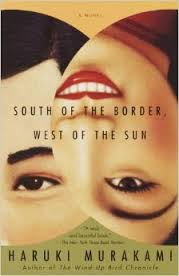

1.31.15 - 9:02 p.m.
SOUTH OF THE BORDER, WEST OF THE SUN REVIEW
Murakami's latest novel, ''South of the Border, West of the Sun,'' also concerns the plight of a pair of lovers. Only this time the couple, even though they are too young to fully realize their fated rightness when they separate, never lose their vivid memories of each other. Their recognition, when they meet years later, is one of joyous disbelief, and in this version of the tale Murakami contemplates the way in which memory not only lingers but gives rise to overwhelming longing for the unreclaimable past (an achievement only somewhat diminished by the limitations of Philip Gabriel's at times jarring translation).
When Hajime and Shimamoto first meet, they are 12 years old. Polio has left Shimamoto lame and her defenses strong -- she is precocious and self-possessed -- but Hajime detects something softer: ''Something very much like a child playing hide-and-seek, hidden deep within her, yet hoping to be found.'' After school, they spend idyllic hours on the sofa drinking tea while listening to Shimamoto's father's records -- Nat (King) Cole, Liszt's piano concertos, the ''Peer Gynt'' Suite. When she momentarily, almost distractedly, grasps his hand one day, his erotic fate, though he doesn't realize it then, is sealed: ''It was merely the small, warm hand of a 12-year-old girl, yet those five fingers and that palm were like a display case crammed full of everything I wanted to know -- and everything I had to know.'' The 10 seconds of their single physical exchange constitute the first stirrings of his sexual awakening.
Their expulsion from paradise comes at the end of the school year. Hajime moves to a nearby town, and the small distance, given their age, is all it takes to sever their connection. He visits Shimamoto a few times, and then, increasingly immersed in his new world, he simply stops. His high school years pass in typical alienated fashion -- with Hajime in the bedroom, the door shut -- until he finds a girlfriend, Izumi, a kind of ''Splendor in the Grass'' Natalie Wood: what he craves, she resists, and they proceed haltingly until Hajime meets the first woman he sleeps with, the first woman to arouse and respond to the intensity of his sexual yearning.
This is an interesting tale, one that certainly does deviate from what we're used to from Murakami. It's much more "Norwegian Wood" than "The Wind-Up Bird Chronicle," in that there lacks a particular fantasy element. But although the strange and absurd is lacking, the same kind of mystery that infuses many of Murakami's books is still present. We are presented with Hajime and follow him from his early childhood through middle-age, watching him go through the growing pains associated with love and friendship. He seems almost mediocre in every way until he marries the right woman and has a string of good luck that results in him living a pretty comfortable life owning and operating two successful bars. Trouble strikes when a girl from his childhood, his first love, comes back and throws his life for a loop.